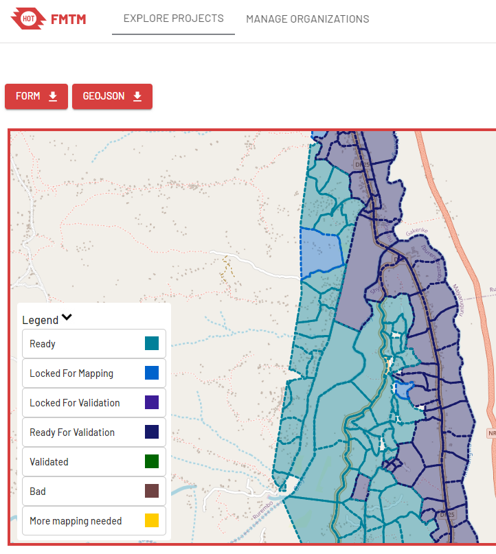
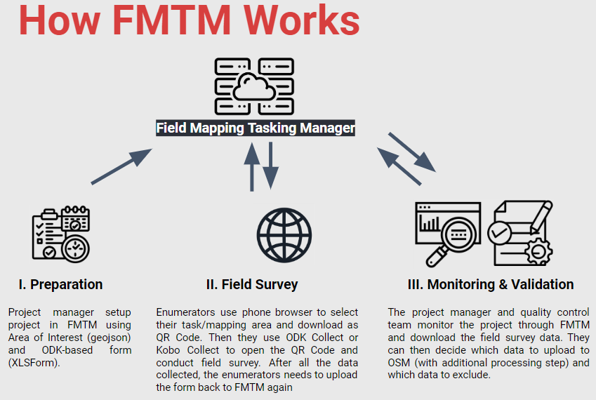
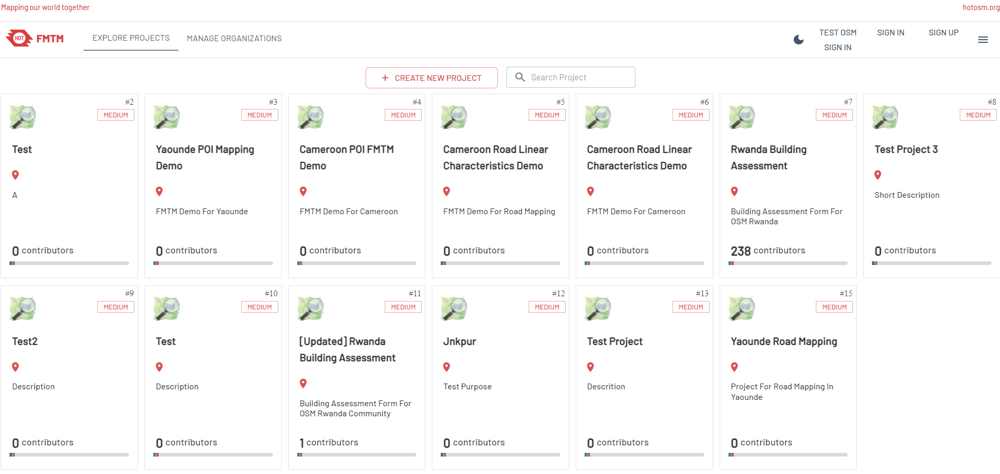
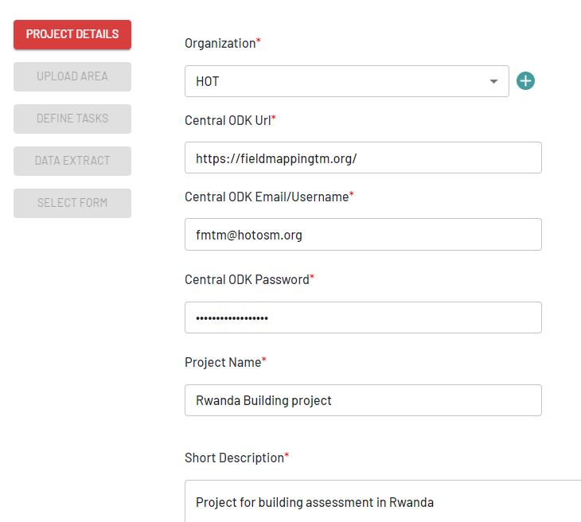
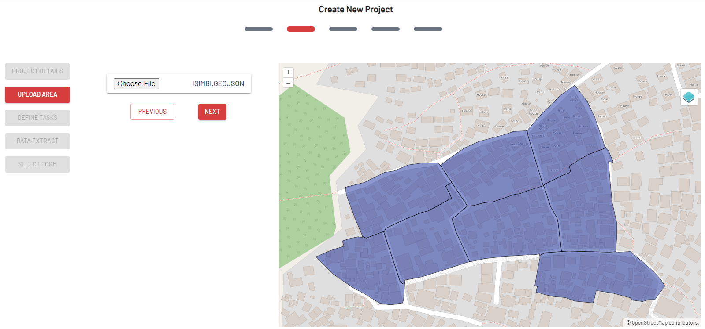
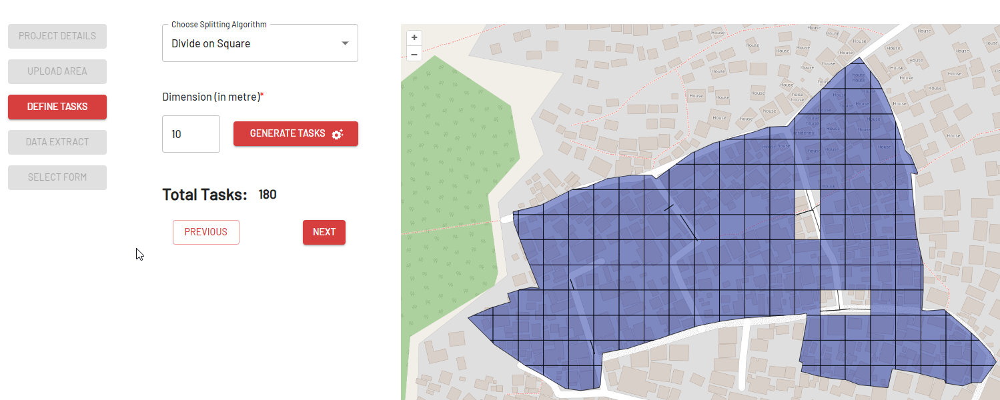
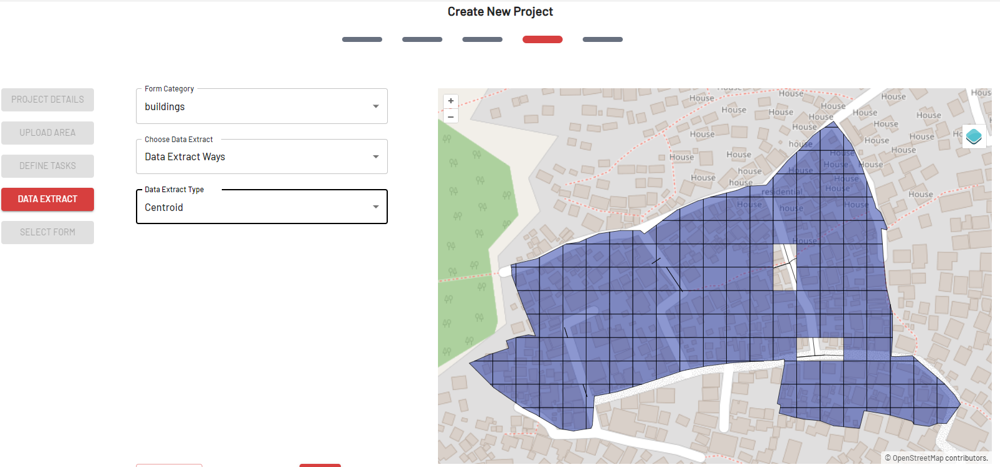
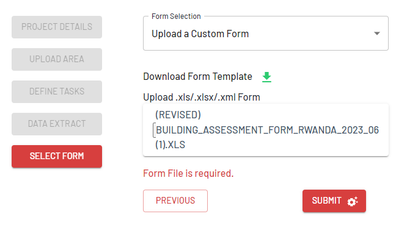
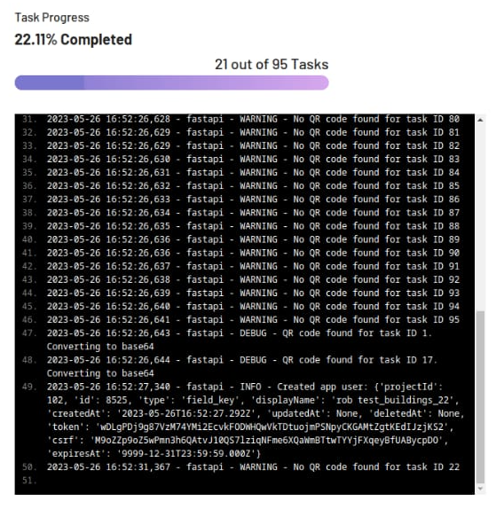

2.8 Configurer un Gestionnaire de Tâche pour la Cartographie de Terrain
Objectifs du cours
Cette section vous fournira des informations générales sur le Gestionnaire de Tâche pour la cartographie de terrain. A la fin de cette section, vous devriez être en mesure de :
- Comprendre ce qu’est le Gestionnaire de Tâche pour la Cartographie de Terrain
- Pouvoir mettre en place un projet avec le Gestionnaire de Tâche pour la Cartographie de Terrain
Activités d’apprentissage
Aperçu général
Le Gestionnaire de Tâche pour la Cartographie de Terrain (FMTM) est une plateforme qui aide les gestionnaires de projets à organiser et à gérer les tâches cartographiques. Il attribue ces tâches à des volontaires et suit leur progression. L’outil comprend des fonctions d’édition collaborative, de validation des données et de détection des erreurs. Cela permet de s’assurer que les données collectées par les volontaires sont exactes et fiables.
FMTM fonctionne de la même manière qu’un gestionnaire de tâches (TM), une plateforme qui permet de gérer et de coordonner un projet de cartographie à distance. FMTM et TM divisent la zone d’intérêt en petites tâches/grilles qui peuvent être accomplies rapidement par plusieurs personnes travaillant en même temps.

FMTM est conçu pour être utilisé en conjonction avec Open Data Kit (ODK). ODK est un ensemble d’outils gratuits et libres qui permet aux utilisateurs de créer, de collecter et de gérer des données à l’aide d’appareils mobiles. L’ODK fournit un ensemble d’outils open-source qui permettent aux utilisateurs de créer des formulaires, de collecter des données sur le terrain et d’agréger les données sur un serveur central. Il est couramment utilisé pour la collecte de données dans le cadre de la recherche, du suivi et de l’évaluation, et d’autres projets de développement.
Les chefs de projet utilisent FMTM pour gérer les tâches et les assigner aux volontaires. Les données collectées par le volontaire via ODK sont généralement téléchargées sur OpenStreetMap (OSM) où elles sont utilisées pour créer des cartes plus détaillées et plus précises de la zone touchée. OSM est une carte du monde libre et gratuite, créée et mise à jour par des bénévoles.

Dans l’ensemble, l’outil FMTM est un élément important des efforts déployés par HOT pour soutenir la réponse aux catastrophes et les efforts humanitaires dans le monde entier. En coordonnant les activités de cartographie et en garantissant l’exactitude et la fiabilité des données collectées par les volontaires, FMTM contribue à fournir des informations essentielles qui peuvent être utilisées pour soutenir la prise de décision et améliorer l’efficacité des efforts humanitaires.
Compétences et technologies nécessaires
- Connexion internet stable
- Connaissance de la cartographie de terrain, notamment en ce qui concerne la création de XLSForm pour ODK. Veuillez lire cette rubrique Création des XLSForm pour ODK pour en savoir plus.
- Compte sur le serveur ODK Central. Voici les instructions pour configurer un serveur ODK Central (c’est très similaire sur AWS ou autre)
| Astuces: |
|---|
| FMTM utilise le serveur ODK Central comme back-end. Il est important que vous construisez d’abord ODK Central ou que vous ayez accès au serveur ODK Central, en particulier pour les informations suivantes:Courriel ODK CentralODK Central EmailMot de passe ODK Central |
Création d’un projet de cartographie pour FMTM
Note : Ce guide suppose que vous avez déjà accès à ODK Central
- Aller sur fmtm.hotosm.org
- Cliquez sur Sign-up pour créer un nouveau compte avec votre adresse électronique. Si vous avez déjà un compte, cliquez sur Sign-in

-
Cliquez sur Create New Project
-
Dans l’onglet project detail , saisissez toutes les informations requises.
Note : vous pouvez mettre votre propre ODK Central, votre nom d’utilisateur et votre mot de passe dans cette section

- Cliquez sur Next après avoir rempli toutes les informations
- Dans l’onglet Upload Area, vous devrez télécharger votre zone d’intérêt au format .geojson. Si vous voulez créer un geojson, vous pouvez utiliser https://geojson.io/.

- Cliquez sur Next après avoir chargé votre Zone d’Intérêt.
- Dans la section Define Tasks, vous devrez choisir la façon dont FMTM divise votre AOI (Diviser en carrés, choisir une zone comme tâche, ou algorithme de répartition des tâches). Cliquez sur Next après avoir maîtrisé la taille des tâches.

- Dans l’onglet Data Extract, vous devez sélectionner votre catégorie de formulaire, ainsi que l’extraction de données. FMTM essaiera d’extraire les données OSM pour les utiliser dans ODK.
- Si vous choisissez Data Extract Ways, Vous devez choisir si vous souhaitez extraire les données OSM sous la forme d’un centroïde ou d’un polygone.

- Cliquez sur Next après avoir défini le type d’extrait de données.
- Dans l’onglet Select Form, vous devez télécharger votre formulaire XLSForm. Téléchargez votre formulaire XLSForm au format .xls/ .xlsx/ .xml

- Cliquez sur Submit pour commencer à télécharger votre formulaire et créer le projet. Si votre projet est déjà terminé, vous recevrez une notification de FMTM.

[Quiz] Testez vos connaissances
-
HOT a développé Tasking Manager pour soutenir les activités de cartographie à distance, tandis que Field Mapping Tasking Manager est axé sur le soutien des activités de cartographie sur le terrain. Les deux plateformes fonctionnent en divisant la zone d’intérêt en petites tâches/grilles.
a.Vrai
b.Faux
-
Pour mettre en place un projet de gestionnaire de tâches de cartographie de terrain, vous devez fournir un fichier AoI geojson et un formulaire XLSForm.
a.Vrai
b.Faux
Answer: 1.A | 2. A
Liste de contrôle des activités
Le Gestionnaire de Tâche pour la Cartographie de Terrain (FMTM) est une nouvelle plateforme actuellement développée par HOT pour soutenir les activités de cartographie sur le terrain. À la fin de cette section, vous devriez être en mesure de :
- Comprendre le concept de FMTM
- Apprendre à créer un projet dans FMTM